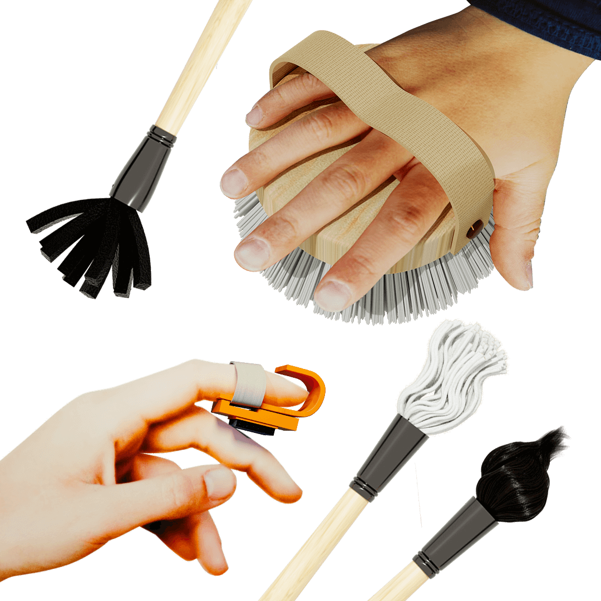
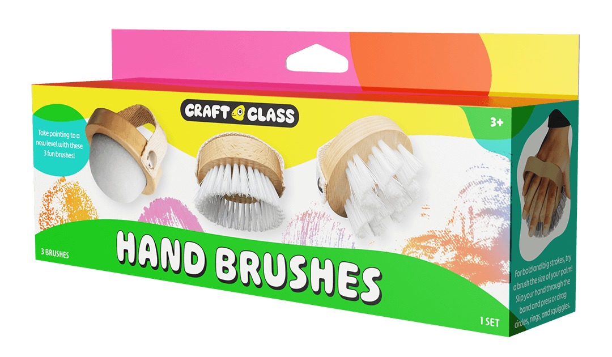
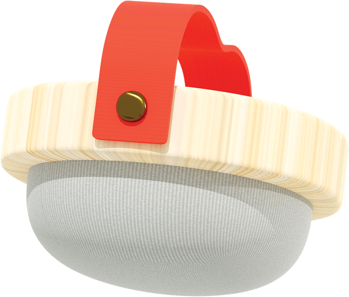
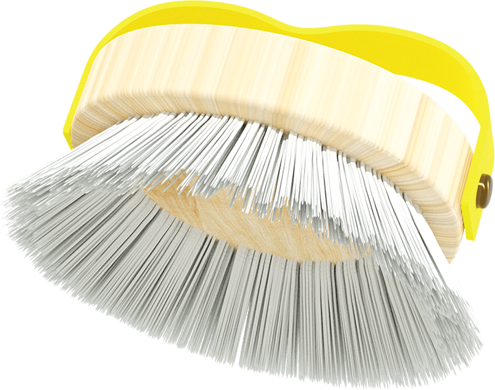
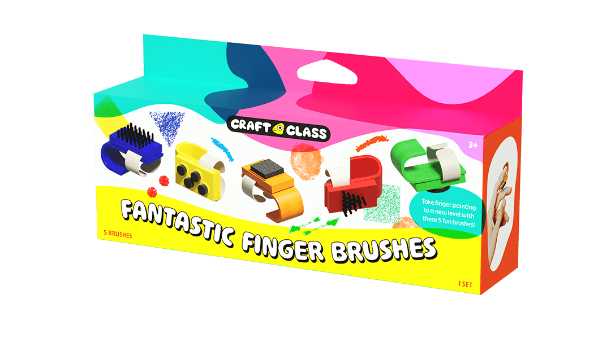
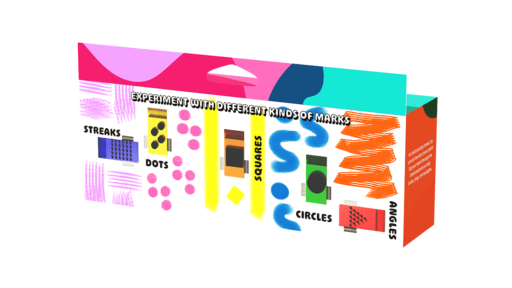
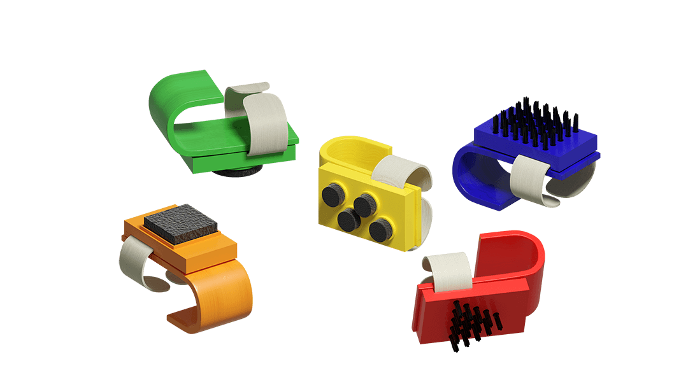

Novelty Brushes
Mark making is an essential concept for young artists to explore. The quality of mark can develop shadows, texture, patterns, motion, and other aspects that contribute to an art piece. For Craft Class through Michaels, I conceptualized three series of paint brushes that challenges traditional art making tools and marks.
Crazy Paint Brushes
What about bristles of different shapes, densities, and material? Crazy Paint Brushes pulls inspiration from sponges, mops, and hair.

Hand Brushes
For large gestures, the Hand Brushes extends the arm as a tool and benefits from gross motor skills.




Finger Brushes
To poke and tweak on a smaller scale. The Finger Brushes exercises fine tune motor skills.



